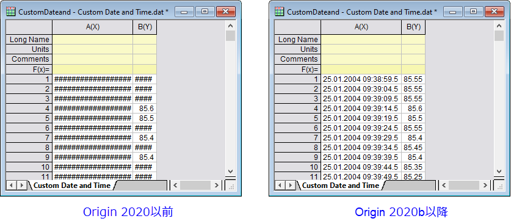

FAQ-1052 Originワークシートで切り捨てられたコンテンツを###ポンド記号として表示。何が変わったのでしょうか。
Worksheet-Display-Pound-Signs-When-Truncated
最終更新日：2020/4/16
- 
Origin 2020bより前のバージョンでは、シートセルの文字シーケンスが現在のセル（列）幅で表示できる文字数を超える場合、Originは記号（######）を表示します。これは、MS Excelのワークシートの動作と同じように変更されました。
-
- テキスト文字列は、列の幅に関係なく######の表示をトリガーしません。文字列全体を表示するには、列幅を広げる必要があります。
- 列幅を超える数値は、最初に最も近い10進数に丸められ、それが完全な整数値を表示するのに十分でない場合に限り、数値の代わりに######が表示されます。
- この数値の丸めは、表示上のものです。内部に保存された値は変更されません。
- セルの内容が完全に表示されなかった場合に、######を表示するという以前の動作に変更するには、システム変数@WPE = 1を設定します。システム変数の値を変更する方法については、このFAQを参照してください。
キーワード:数値, 数字, 短縮, 切り捨て, セル幅, 列j幅, 省略